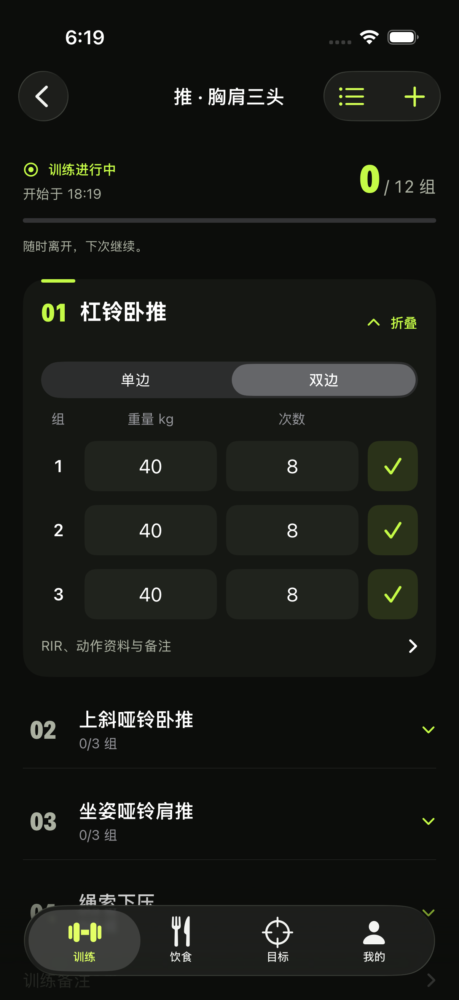
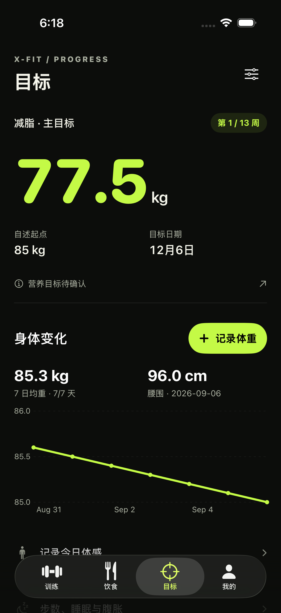
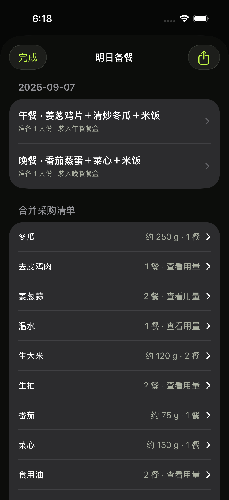
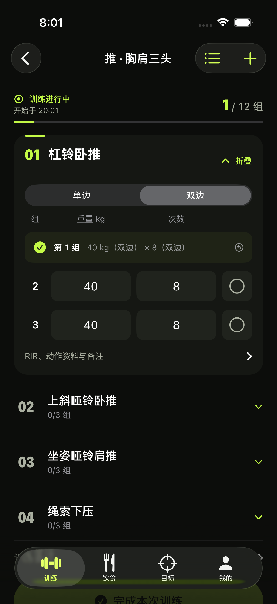
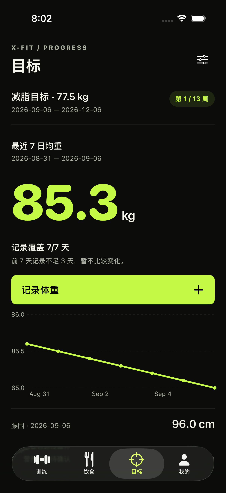

训练 · 未完成
空心圈表示待完成，顶部压缩，把空间留给当前组。

展开修改前对比

目标 · 当前进展
当前七日均重、覆盖率和记录入口优先；目标体重作为参照。

展开修改前对比

备餐 · 做什么、装几份
图文餐盒卡，一眼看清午晚餐；菜单与采购直接切换。

展开修改前对比

训练 · 已完成
实心勾与摘要显示已完成，可点按撤销，再继续记录。

备餐 · 合并采购
食材名与合计量对齐；库存、烹调用水与配方说明按需展开。

大字体 · 当前进展
主要数字和记录入口保持可滚动到达。

大字体 · 备餐
菜式、分装和分享入口保持可达。